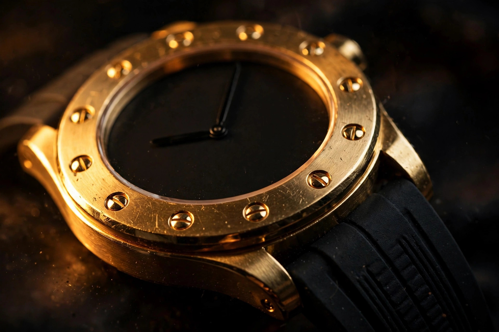

Watches / Materials Engineering
The First Fusion: Hublot Rebuilds Its 1980 Gold-and-Rubber Provocation
The Classic Fusion Tributo, unveiled in Milan on October 15, returns to Carlo Crocco's 1980 original: a gold case on a rubber strap, twelve porthole screws, nothing else. The new engineering hides underneath, where a 22-karat gold rotor in one version and a black tungsten rotor in the other quietly argue about density.

For the first two days of the 1980 Basel watch fair, Carlo Crocco had a problem. He had spent three years developing a gold watch with a rubber strap, moved his family from Italy to Switzerland, and founded a company to build it. Nobody came to the booth.
So Crocco and his wife went out and bought materials to write “rubber strap” in the display window. By the third day, people were talking. Within months, members of Europe’s royal families were buying the watch: Constantine II of Greece bought two, keeping one and giving the other to his brother-in-law, King Juan Carlos of Spain. It was quite the achievement for a new name in an industry that was having a miserable decade. Japanese quartz watches had taken a huge share of the market and established Swiss manufacturers were closing their doors. Crocco’s answer was a 36mm gold quartz watch with an almost completely plain black dial, twelve screws around the bezel, and a rubber strap that smelled faintly of vanilla.
Forty-six years later, Hublot has gone back to that booth. Unveiled in Milan on October 15, the Classic Fusion Tributo reissues the original in two versions: yellow gold and white gold, references 262.VX.1130.RX.MDM and 262.WX.6870.RX.MDM respectively. Case dimensions grow from 36 to 38 millimeters, thickness lands at 9.5, the quartz is gone, and the price is US$30,900 for either metal. It is not a limited edition. That last fact matters, and I will come back to it.
Quartz out, manufacture in
The single biggest engineering change is the one you cannot see from the dial side. Classic Fusions have long run Sellita-based movements, a sore point at this price bracket that the enthusiast press has never quite let go of, and the Tributo retires that arrangement. Inside runs the HUB1711, an automatic that Hublot calls manufacture, built on the Elite 670 from sister brand Zenith, where current Hublot CEO Julien Tornare ran the show until last year. Subtle it is not, and it does not need to be: LVMH owns both houses, and the Elite 670 is a proven slim automatic with 185 components in this configuration, beating at 28,800 vibrations per hour.
Power reserve is where the paperwork gets interesting. Hublot’s own communications variously claim 50 and 60 hours, depending on which outlet you read: Hodinkee and Time+Tide report 50, Revolution and Watchonista say around 60. Historically, the Elite 670 family sits at 50 hours. Treat the higher number as press-kit optimism until a timing machine says otherwise. Either figure is a long way from a quartz battery, which was the entire point of the original’s insult and remains the Tributo’s quietest upgrade. Crocco’s own words, from an interview this week: “It’s great to see that an automatic movement is housed in this timepiece!” When the man who built the original is relieved the new one ticks mechanically, you know where the industry landed.
A sapphire caseback shows an H-shaped rotor, openworked around the brand’s initial. And here is where the engineering gets genuinely interesting, because the rotor is not the same in the two watches.
The rotor argues about density
In the yellow gold Tributo, the oscillating weight is 22-karat gold; in the white gold version, black tungsten. Same H shape, same openworking, different metals, chosen for one reason and one reason only: they weigh almost the same.
Gold has a density of 19.32 grams per cubic centimeter; tungsten sits at 19.25, and the difference is noise. A rotor exists to convert wrist motion into winding energy, and its effectiveness is a function of its mass concentrated at the rim: heavier rotor, more torque delivered to the winding gears per swing. If Hublot had fitted the white gold watch with a steel rotor, the rotor would have needed to be visibly larger or the watch would have wound less efficiently, and a gold rotor would have clashed with the watch’s deliberate cool monochrome. Tungsten solves the equation. It is nearly as dense as gold, it takes a black finish without complaint, and it lets the white gold version keep the same winding geometry and inertia as the yellow gold one while looking like it belongs to a different temperature of watch entirely.
This is materials selection doing real work, not decoration. Tungsten is also brutally hard to machine compared with gold, which makes the black tungsten rotor a more expensive part to produce than its simple appearance suggests. Hublot does not advertise that difficulty, and it does not need to. That decision stays visible every time the watch moves on the wrist, with the rotor swinging at exactly the authority the movement was calibrated for.
Nine and a half millimeters, a hundred meters
Water resistance is 100 meters, achieved with a screw-down crown the original never had. Time+Tide notes the new rating is twice the depth rating of the current generation of time-and-date Classic Fusion watches, which sit at 50 meters. Stop and consider the packaging problem: 9.5 millimeters of total case thickness, in solid gold, holding 10 atmospheres. Gold is soft, and thin is unforgiving at 9.5 millimeters. A screw-down crown in a gold case threads metal against metal under pressure, and every service interval is an argument about thread wear in a way steel cases rarely face. Getting this right in 9.5 millimeters is the kind of quiet engineering the Tributo never mentions and the original could not have attempted.
Hublot describes a five-part construction with polished and satin finishes and edged angles meant to catch light off the curves. Twelve slightly domed bezel screws remain, doing double duty as the hour markers on a dial that otherwise refuses conventional indices, with the date at 3 o’clock. Everything else is restraint, which for Hublot is the rarest material of all.
Stone, lacquer, and the screws that tell time
The two dials diverge the way the two rotors do. Yellow gold gets matte black lacquer with a faint charcoal grain and gold MDM lettering at 6 o’clock, a nod to the MDM Genève signature the brand launched under. White gold gets polished black onyx with black-plated titanium H-shaped bezel screws.
Onyx is a materials commitment. It is a banded chalcedony, brittle under the tool, and a dial cut from it cannot be reprinted or touched up: every flaw in the stone is permanent, and every dial is therefore an individual. Polishing it to a mirror without fracturing the blank is the entire craft. Lacquer, by contrast, is forgiving until it is not. A matte black lacquered dial shows nothing, which means it shows everything: dust under the lacquer, uneven spray, a fingerprint from assembly. Both dials are exercises in refusing to hide.
One deliberate omission deserves credit. Hublot left off its One Click quick-change strap system. Between exposed lugs sits the black lined rubber strap, exactly as the original’s did, because the quick-change mechanism would have changed the silhouette. When a brand skips its own signature convenience feature to keep the geometry honest, believe the geometry mattered.
What the fusion actually was
It is worth being precise about what Crocco invented in 1980, because the word “fusion” has been stretched thin by four decades of marketing. Crocco’s original provocation was not a complication, and not a material in the metallurgical sense. It was a pairing: precious metal against vulcanized rubber, luxury against sport, at a moment when Swiss watchmaking treated those categories as a caste system. Twelve screws and all, the porthole bezel gave the provocation its shape. Hublot is French for porthole. Its name came from the bezel before the brand stood for anything.
Crocco’s own framing, then and now, was never about shock value. “I did not want to make just another beautiful gold watch; I wanted to introduce a new language,” he said this week. “Putting a gold watch on a rubber strap was radical at the time, but for me it was not provocation for its own sake. It was about harmony, comfort and modernity, in Italian style.” There is a through-line from that sentence to the Tributo’s tungsten rotor. Harmony, in 2026, means the winding mass matches the movement’s calibration. Comfort means 38 millimeters and 9.5 thick. Modernity means a manufacture automatic where quartz once sat.
Between them sit the decades that hold the rest of the story. Crocco stepped back when Jean-Claude Biver’s vision proved too strong to share a company with; Biver became CEO in 2004, the Big Bang chronograph followed in 2005, and LVMH acquired Hublot in 2008. For the next fifteen years the brand was the loudest room in watchmaking: sapphire cases, Magic Gold, the Square Bang. Against that noise, the Tributo reads as a homecoming. MDM has acquired a second meaning since Crocco’s early days. In 1998 he founded the Main Dans la Main Foundation, which supports vulnerable children and families through projects in India, Switzerland and Italy, including therapeutic farms for children with mental health conditions or autism. Hublot is donating CHF 100,000 to the foundation to mark the launch. That signature at 6 o’clock now points two directions at once.
Honest reservations
Scholarly rigor requires the other column. I have not handled the Tributo, and press images are not metrology. US$30,900 buys a time-and-date watch with no complication beyond a date window, and no amount of rotor metallurgy changes that arithmetic. Comparatively, the defense holds: at 38 millimeters in solid gold with a manufacture movement, most of the competition sits well above this price, and the non-limited status means you can actually buy one instead of joining a list. But the buyer is paying for restraint, history, and finishing, not for mechanical spectacle. Know which currency you are spending.
More than it should, the power reserve discrepancy bothers me. A manufacture launch with two different reserve figures in simultaneous press coverage suggests the spec sheet went out before the timing machines finished. It is a small thing, and small things are how you judge manufactures.
And one mourning note: the original’s strap smelled of vanilla. Its replacement is lined black rubber with a case-matching gold buckle and black-plated deployant. Nobody scents straps anymore. Something was lost, and it was not the quartz.
Still. Restraint is the best engineering in the Tributo, and restraint is the one thing Hublot’s modern catalog rarely attempts. Twelve screws doing the work of twelve indices. A rotor chosen by density instead of decoration. A quick-change system deleted for the sake of a silhouette. In 1980, the original proved that gold and rubber could share a wrist; the Tributo proves that the idea, rebuilt with forty-six years of manufacture behind it, did not need to shout. It never did. That was always the point of the window sign.
Classic Fusion Tributo: key figures
| References | 262.VX.1130.RX.MDM (yellow gold) / 262.WX.6870.RX.MDM (white gold) |
|---|---|
| Case | 38 mm × 9.5 mm, polished and satin-finished 18k yellow or white gold, five-part construction |
| Bezel | Twelve slightly domed screws; black-plated titanium screws on white gold version |
| Dial | Matte black lacquer, charcoal effect (yellow gold) / polished black onyx (white gold); no applied indices; MDM signature at 6 o’clock |
| Movement | HUB1711 automatic, manufacture, Zenith Elite 670 base, 185 components, 28,800 vph |
| Power reserve | ~50 hours per most outlets; Hublot materials variously cite 50 or 60 hours |
| Rotor | Openworked H-shape; 22k yellow gold (yellow gold version) / black tungsten (white gold version) |
| Water resistance | 100 m, screw-down crown (original had neither the rating nor the crown) |
| Strap | Black lined rubber, exposed lugs; no One Click system; case-matching gold deployant buckle |
| Price | US$30,900 / CHF 25,000 / £23,600; not a limited edition; available now |
| Warranty | Hublot 5+5 program, up to 10 years |
| Original (1980) | 36 mm gold case, quartz movement, plain black dial, vanilla-scented rubber strap; unveiled at Basel Fair under the MDM Genève name |
Sources: Hublot Classic Fusion Tributo press materials via Europa Star, Oct 15, 2026; Hodinkee, “Hublot Takes Us Back To The Beginning With The Classic Fusion Tributo,” Oct 15, 2026; Time+Tide, “Hublot Classic Fusion Tributo” introducing/hands-on, Oct 15, 2026; Revolution, “Hublot Hits Rewind,” Oct 2026; HiConsumption, “Hublot Resurrects Its Very First Watch with Help from the Man Who Designed It,” Oct 2026; Watchonista, “Hublot’s New Classic Fusion Tributo is a Golden Ode to the 1980 Original,” Oct 2026; Swisswatches Magazine interview with Carlo Crocco, Oct 2026; WatchAdvice, “Hublot Heads Back To Its Roots,” Oct 16, 2026; Stuff, “Hublot Classic Fusion Tributo revives the 1980 original,” Oct 2026; Hypebeast release info, Oct 2026; BusinessToday, “Hublot Revives A Design Classic With Two New Gold Models,” Oct 17, 2026. Rotor and material densities: gold 19.32 g/cm³, tungsten 19.25 g/cm³ (standard reference values). This author has not handled the watch; all measurements are per published sources.